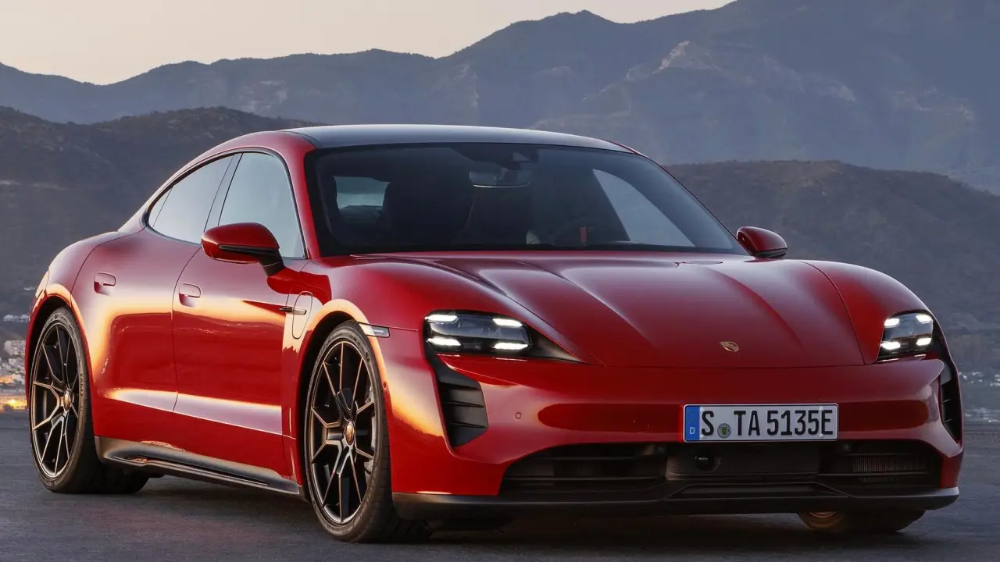

Totalmente elétrico, o novo Taycan GTS agrega agora emoções ainda mais intensas à experiência de direção Porsche. É quase impossível obter mais fascinação com 3 letras.
Purístico, expressivo, atemporal: forças expressivas que literalmente permeiam o Taycan – adicionalmente enfatizadas pela flyline dinâmica e plana. Mesmo no que diz respeito ao espaço livre, ele não fica para trás, mas oferece conforto exclusivo para 4 pessoas além do porta-malas traseiro e dianteiro.
Os valores oficiais de autonomia do Taycan conforme Programa Brasileiro de Etiquetagem Veicular (PBEV) do Inmetro, com base na norma SAE J1634, são: Taycan – 286 km | Taycan 4S – 241 km | Taycan GTS – 318 km | Taycan Turbo – 281 km | Taycan Turbo S – 278 km | Taycan 4 Cross Turismo – 272 km | Taycan 4S Cross Turismo – 300 km. Com o indicador de autonomia abaixo, você pode estimar a autonomia do seu próprio trajeto. O cálculo é uma estimativa e leva em consideração seu perfil de direção pessoal, nas suas condições de viagem e no respectivo nível de equipamento do modelo. Por favor, selecione as opções mais relevantes para você.
